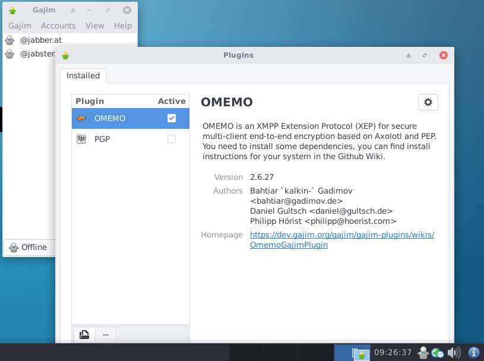

We believe security software like Whonix needs to remain Open Source and independent. Would you help sustain and grow the project? Learn more about our 14 year success story and maybe DONATE!
BitMessageDocumentationSimpleXPrevious page: BitMessageIndex page: DocumentationNext page: SimpleXInstant Messenger Chat
Anonymous Chat, IRC, XMPP in Whonix.
General Safety Advice
 Tip: Most existing instant messenger protocols are
unsafe from a privacy point of view. This is not a Whonix-specific
problem, but a general problem with instant messengers.
Tip: Most existing instant messenger protocols are
unsafe from a privacy point of view. This is not a Whonix-specific
problem, but a general problem with instant messengers.
 It is estimated that within 10 to 15 years, Quantum Computers will break
today's common asymmetric public-key cryptography algorithms used for
web encryption (https), e-mail encryption (GnuPG...), SSH and other
purposes. See Post-Quantum
Cryptography (PQCrypto).
It is estimated that within 10 to 15 years, Quantum Computers will break
today's common asymmetric public-key cryptography algorithms used for
web encryption (https), e-mail encryption (GnuPG...), SSH and other
purposes. See Post-Quantum
Cryptography (PQCrypto).
It is recommended to review the Do not Mix Anonymity Modes section in conjunction with this entry. For a comprehensive comparison of instant messengers, see here.
Encryption
Tor exit relays can eavesdrop on communications if encryption to the server is disabled. Depending on the protocol which an instant messenger is using, encryption might be disabled by default or not even supported. Tails has noted that without encryption, Tor exit relays can see the contact list, all messages, file transfers, and audio/video. [1] While encryption to the server prevents exit relay eavesdropping, it still leaves one problem unresolved: server logging.
High-risk users should also bear in mind that even in the event that
strong and secure end-to-end encryption is used -- for example encrypted
chat using .onion connections only (staying within the Tor
network) -- advanced adversaries are capable of compromising the trusted
computing base (TCB) [2] of nearly all platforms:
[3]
All proper end-to-end encrypted (E2EE) messaging systems store private key(s) exclusively on user's device (endpoint). The holy grail of attacks against E2EE systems is called exfiltration where the sensitive data, namely the private keys or plaintext messages, are stolen from the endpoint. The attack is directed against the trusted computing base (TCB) of the target system. The overwhelming majority of TCBs are connected to the network and compromising them with polished malware that exploits a zero-day vulnerability, is trivial and undetectable.
Another consideration is that even when using end-to-end encrypted applications, additional strong security protocols such as forward secrecy [4] may not be available for group communication channels, see: More is Less: On the End-to-End Security of Group Chats in Signal, WhatsApp, and Threema.
Web Interfaces
Avoid using web interfaces for any messengers because they break end-to-end encryption (E2E). If the website can show the messages, it follows that the server, if malicious or compromised, could also view the messages. Locally running applications should be preferred. Web apps running on a foreign server accessed through the user's browser are more exposed and therefore have a higher security risk.
Server Logging
Encrypted server connections does not prevent the server from gathering information about users or building a social graph. A non-exhaustive list of things the server could infer or log are:
- Account names
- List of contacts
- The exact date and time of logins
- Message timestamps
- Communication patterns like common contacts (see footnote) [5]
The content of messages will only be protected by using end-to-end encryption, for example OMEMO. The threat of server logging can be completely removed with decentralized (server-less) instant messengers like OnionShare.
Jabber / XMPP
Jabber/XMPP is a libre server-federation protocol designed with openness in mind: "... All of the existing XMPP servers, clients, and programming libraries support the key features of an IM system, such as one-to-one and multi-party messaging, presence subscriptions and notifications, and contact lists."
The system is decentralized because there is no central authoritative server; anyone can run a server. Some users are confused on this point because there are a number of large and popular public XMPP servers (like jabber.org), to which many have subscribed. [6] A list of all public servers is available at https://list.jabber.at/ Each network user has a unique XMPP address called a JID (Jabber ID). The JID is similar to an email address insofar as it has a username and domain name like username@example.com [7]
Safely using the protocol requires enabling encryption (such as OMEMO), because it is unwise to trust server connections are properly encrypted between each other. You can check the OMEMO version used by different clients on this page: https://xmpp.org/extensions/#xep-0384-implementationsJabber (note that the latest versions of the protocol may be in the experimental stage). XMPP privacy is also limited, as various adversaries are capable of observing which accounts are communicating. XMPP and Tor combined only guarantee pseudonymous communications, as while the user's current location is hidden, the social graph can still expose their true identity. For tips on operational security when chatting anonymously, see this article by The Intercept. Also see: Why prefer open protocols such as Jabber/XMPP over proprietary ones such as ICQ?
IRC
When using IRC (Internet Relay Chat) inside Whonix-Workstation™, the Ident Protocol is automatically blocked because Whonix-Workstation™ is firewalled. Therefore the associated daemon will not identify the username which is linked with a particular TCP connection, as is normally the case.
Some IRC networks (most notably Libera.Chat) do not permit anonymous Tor access and require that you identify yourself in order to use the network over Tor. OFTC, however, allows anonymous Tor access.
The Tor Project Internet Relay Chat page contains a number of important recommendations and tips for safe IRC use:
- Use onion services when available.
- Check self-signed certificates have the correct SSL/TLS certificate.
- Cycle Tor circuits to evade censorship bans.
- Chain VPNs and Tor for registration.
- Use OTR for end-to-end encryption.
- Distrust users and servers in general.
- Avoid personally identifiable information in chats.
- Check the user fingerprint before using IRC.
- Harden the IRC client.
- And more.
Legal Data Access
In 2021, a Freedom of Information request uncovered a FBI training document that summarizes the level of access US law enforcement has to various secure messaging services. Most importantly, it revealed there is some limited access to encrypted messages in iMessage, Line and WhatsApp, but not to messages sent with Signal, Telegram, Viber, WeChat and Wickr; refer to the comparison table below.
Application |
Legal Process and Other Details |
|---|---|
Apple iMessage |
|
Line |
|
|
|
Threema |
|
Viber |
|
|
|
|
|
|
|
Instant Messenger Selection Criteria
A recommendation if any can be made depends on the threat model, priorities of the user. An obvious recommendation is impossible at time of writing because no instant messenger exists with all of the minimum desired security properties.
Signal is adamant about phone number validation (see Phone Number Validation vs User Privacy) , registration by phone which leads to very bad usability for most users that wish to remain anonymous and/or hide their social graph from the server.
OMEMO encryption has amazing security properties but it's opt-in in all known chat programs, which is a huge usability issue. Meaning users could easily forget to enable it or due to bugs getting disabled. It is also XMPP-specific, therefore there are no instant messengers that are serverless (and thereby hiding the user's social graph) as well as at the same time support OMEMO encryption. OMEMO is built on top of the double-ratchet encryption algorithm however, and there are a variety of messengers that support double-ratchet encryption.
The most secure instant messenger would be serverless with local data storage, peer to peer (p2p) over Tor onions or another metadata protection-resistant onion routing, without a permanent user ID, with well-audited quantum resistance to double-ratchet end-to-end encryption enabled by default -- only SimpleX and Cwtch are closest to these criteria.
Instant Messenger Security Properties Comparison
- TODO: unfinished
- Wiki editors notice: Please do not expand this table without prior discussion. To keep maintenance effort low, this table shall be a curated list with most suitable choices only. Messengers that are discouraged in context of anonymity such as Telegram and Signal (due to the Phone Number Validation issue), shall not be added to this list.
Feature |
Dino IM |
Gajim |
|||
|---|---|---|---|---|---|
Network |
SimpleX Network |
Tor onion |
XMPP ("Jabber") |
XMPP ("Jabber") |
Tor onion |
End-to-end encryption (E2E) protocol |
Simplex Messaging Protocol (SMP)[11] |
Tapir Protocol[12] |
OMEMO[13] |
OMEMO[14] |
Tor onion protocol[15] |
Security Property |
|||||
Serverless / peer to peer / onion to onion |
Client to unidirectional SimpleX routing (server does not store data)[16] |
Yes, client to onion (server) |
No |
No |
Yes, client to onion (server) |
No risks introduced for hosting an Onion Service [17] |
Yes |
Yes |
Yes |
Yes |
No |
End-to-end encryption (E2E) by default |
Yes |
Yes |
No |
No |
Yes |
Quantum resistance |
Yes |
No |
No |
No |
No |
Verifiability |
Yes (Simplex Messaging Protocol) |
Yes (Tapir Protocol) |
Yes (OMEMO) |
Yes (OMEMO) |
Yes (Onion E2EE authentication) |
Deniability |
Yes (Simplex Messaging Protocol) |
Yes (Tapir Protocol) |
Yes (OMEMO) |
Yes (OMEMO) |
No |
Message padding [18] |
Yes |
Yes |
Yes |
Yes |
? |
Perfect Forward Secrecy (PFS) |
Yes (Simplex Messaging Protocol) |
Yes, Tor provides forward secrecy |
Yes (OMEMO) |
Yes (OMEMO) |
Yes, Tor provides forward secrecy |
Written in memory safe language |
Yes (Haskell, Kotlin) |
Yes (Go, Rust) |
No (C) |
Yes (python) |
Yes (python) |
Metadata resistant |
Yes |
Yes |
No |
No |
Yes |
Self-destruct passcode |
Yes |
No |
No |
No |
No |
Audited protocol/crypto/client |
Yes, (Trail of Bits: 2022, 2024) [19] |
No |
No, only protocol/crypto (Radically Open Security: 2016) [20] |
No, only protocol/crypto (Radically Open Security: 2016) [21] |
Yes, (Radically Open Security: 2021) [22] |
Signed application releases |
Yes (SimpleX Chat team, Flux team) [23] |
? [24] |
? [25] |
? [26] |
Yes (OnionShare team) [27] |
Signed source code |
? [28] |
? [29] |
? [30] |
? [31] |
? [32] |
Reproducible builds |
Yes (Server, client)[33] |
Yes[34] |
Yes[35] |
Yes[36] |
No |
Usability Property |
|||||
Multiple Devices Support |
No |
Yes |
Yes |
Yes |
No |
Offline Messages / Backlog |
Yes |
No |
Yes |
Yes |
No |
File Transfer |
Yes |
Yes |
Yes |
Yes |
Yes |
Voice Messages |
Yes |
No |
No |
Yes (Available since Debian Trixie) |
No |
Voice Chat |
Yes |
No |
Yes |
No (with plugin) |
No |
Video Chat |
Yes |
No |
Yes |
No (with plugin) |
No |
Recommendation
Applications discussed in this chapter are listed in order of best usability and compatibility with Whonix, based on the opinion and experience of Whonix developers.
It should be noted that no single application listed here has a superior feature set. Users must make a choice based on personal preferences and their self-assessed threat model:
- SimpleX has a high level of security and anonymity: post-quantum encryption, does not require a phone number or email for registration, protects against metadata collection, data is stored locally, incognito mode allows for the creation of separate chats with random names, etc.
- Cwtch has a high anonymity and protection against metadata collection: does not require a phone number or email for registration, data is stored locally, all communication is end-to-end encrypted and takes place over Tor (there is no "Cwtch service" or "Cwtch network"). Not undergone an independent security audit at the time of writing.
- Dino IM provides a good UX, a modern and clean look and OMEMO support. On the downside, it requires a Jabber server which weakens anonymity.
- Gajim has more Jabber users, is written in memory-safe python, supports offline messages, and can provide OMEMO encryption. On the downside, it requires a Jabber server which weakens anonymity.
- OnionShare provides a serverless (hosted using a Tor onion service), secure, ephemeral and anonymous chat feature. It is particularly useful because it does not require account creation, is encrypted end-to-end and reduces the risk of messages being stored locally.
SimpleX
See SimpleX.
Cwtch
See Cwtch.
Dino IM
Overview
Dino IM is a modern XMPP ("Jabber") Chat Client written in GTK+/Vala for GNU/Linux and is available in Debian. OMEMO is supported, but needs to be toggled in the chat window. OpenPGP is also supported.
Installation
Install package(s) dino-im following these
instructions:
1 Platform specific notice.
- Non-Qubes-Whonix: No special notice.
- Qubes-Whonix: In Template.
2
 Update the package lists and upgrade the system.
Update the package lists and upgrade the system.
sudo apt update && sudo apt full-upgrade
3
Install the dino-im package(s).
Using apt command line
 <code>--no-install-recommends</code> option is in most cases
optional.
<code>--no-install-recommends</code> option is in most cases
optional.
sudo apt install --no-install-recommends dino-im
4 Platform specific notice.
- Non-Qubes-Whonix: No special notice.
- Qubes-Whonix: Shut down Template and restart App Qubes based on it
as per
 Qubes Template Modification.
Qubes Template Modification.
5 Done.
The procedure of installing package(s) dino-im is
complete.
Key Backup
In addition to the fingerprint displayed in clients, OMEMO uses session/ephemeral keys: as soon as you chat with someone, these keys are created and they are replaced with new ones after every message exchange.
Without the latest session keys, incoming messages cannot be decrypted. This means when session keys are imported from an older backup, problems are likely if the keys were used in between.
Both types of keys are stored in
~/.local/share/dino/omemo.db (a SQLite database). Problems
are avoided so long as keys are not backed up while Dino is running and
Dino is not started from the same database twice.
Gajim
Overview
Ubuntu provides a succinct overview of Gajim: [37]
Gajim is a free software, instant messaging client for the Jabber (XMPP) protocol which uses the GTK+ toolkit. It runs on GNU/Linux, BSD and Windows. The name Gajim is a recursive acronym for Gajim (is) a jabber instant messenger.
The goal of Gajim is to provide a full featured and easy to use Jabber client. Gajim works nicely with GNOME, but does not require it to run. It is released under the GNU General Public License.
Gajim has various features, including: [38]
- chat client synchronization
- group chats
- sending of pictures, videos and other files to friends or groups
- secure end-to-end encryption via OMEMO or PGP
- the option to keep and manage all chat history
- connection compatibility with other messengers via transports, such as IRC
- various other features are available via plugins
In 2021, audio/video is reportedly not functional in Gajim. Further,
OTR support was dropped in Gajim release 1.0, but the OMEMO
plugin is an encryption alternative. [39]
Figure: Gajim Client in Whonix

Installation
 Tip: Gajim dependencies and Debian instructions are
always available here.
Tip: Gajim dependencies and Debian instructions are
always available here.
The steps below install Gajim, along with the OMEMO encryption plugin
and HTTP
Upload plugin (which is required for file transfers).
[40] The latter plugin is fully integrated into the core
Gajim software as of version 1.0. Upon first launch of the
program, users can use an existing XMPP account or create a new one.
Update the package lists.
sudo apt update
Install gajim and gajim-httpupload. [41]
sudo apt install gajim gajim-httpupload
Start Gajim from the start menu or type in konsole.
gajim
Configuration
Account
On first launch, an Account Creation Wizard Dialog will appear. Use the wizard to either create a new account to connect to the jabber network or use an existing account. For new accounts, there are multiple jabber servers available and only a username and password is required to join. [43]
Gajim Settings
The following changes are recommended for better security and privacy.
Logs:
Edit→Accounts→ uncheckSave conversation logs for all contacts
Activity settings:
Preferences→Status→ uncheckAway after[44]Preferences→Status→ uncheckNot available after
Privacy settings:
Preferences→Advanced→Privacy→ uncheckAllow client / OS information to be sentAllow local system time information to be sentLog encrypted chat sessionAllow my idle time to be sent
Prevent auto-start:
Preferences→Advanced→applications→Custom→ clear fields for: [45]BrowserMail ClientFile Browser
Preferences→Advanced→global proxy→TorPreferences→Advanced→global proxy→mange→Tor→ checkUse proxy authentication→ leaveusernameblank → leavepasswordblank
Gajim cannot be installed by default in Whonix yet, as there is more development work TODO; see Dev/Gajim.
OnionShare
See OnionShare.
Delta Chat
See DeltaChat.
IRC Clients
irssi
- Text-only IRC client, runs in a terminal.
- To install:
sudo apt install irssi irssi-plugin-otr - Setup instructions: https://irssi.org/New-users/
- Supports OTR chat encryption: https://irssi.org/documentation/help/otr/
WeeChat
- Text-only IRC client, runs in a terminal.
- To install:
sudo apt install weechat - Setup instructions: https://weechat.org/files/doc/weechat/stable/weechat_quickstart.en.html
- Supports a large number of plugins (known as "scripts" in WeeChat) that can be installed directly from within the IRC client. Some of these scripts provide cryptography support within WeeChat, however OTR encryption is not well-maintained or even usable.
Quassel IRC
- Graphical IRC client based on Qt and KDE libraries. Not an official KDE project.
- To install:
sudo apt install quassel - Features an integrated setup wizard. Documentation is at https://bugs.quassel-irc.org/projects/quassel-irc/wiki
- Does not support OTR encryption, however rudimentary symmetric
encryption via Blowfish is supported. Documentation on enabling and
using encryption: https://bugs.quassel-irc.org/projects/quassel-irc/wiki/Blowfish_Encryption_Manual
- Do NOT use ECB mode, it is highly insecure. See https://crypto.stackexchange.com/a/20946 for details on why.
Matrix clients
Matrix is a federated chat protocol and server network. It is similar to XMPP in that one can create an account on any Matrix server to access chatrooms and communicate with users on the Matrix network, even if the other users being communicated with are using a different Matrix server.
While Matrix does support end-to-end encryption in both one-on-one and group chats, it has a number of serious shortcomings:
- A verification procedure is needed to ensure the Matrix server is not performing a man-in-the-middle attack on encrypted communications. However, this verification procedure can oftentimes be difficult to impossible to complete due to client and/or server bugs.
- Messages in encrypted rooms are sometimes unable to be decrypted by some of the users in the room.
- Matrix server admins can trivially intercept new encrypted messages sent to a user by logging into that user's Matrix account themselves. Even though their new login will not be "verified" and will not have access to previously sent messages, Matrix clients will by default encrypt all newly sent messages with a key that the unverified device can read.
- Support for encryption varies between Matrix clients, and oftentimes isn't implemented at all.
- libolm, which was previously the primary library used to provide encryption functionality for Matrix, had multiple dangerous security flaws that would potentially have allowed Matrix's encryption to be compromised.[48] This library has since been deprecated.
- Matrix has well-known issues with large-scale metadata leakage. [49]
- The Matrix protocol itself theoretically supports forward secrecy [50], but certain clients, such as Element, may not have this feature. Users should review the client's documentation before starting a chat.
- The Matrix protocol has been criticized for several practically-exploitable cryptographic vulnerabilities that, together, invalidate the confidentiality and authentication guarantees claimed by Matrix against a malicious server. [51]
While not technically a shortcoming, most rooms on the Matrix network do not have encryption enabled.
Many different Matrix clients exists, Element being the most commonly used client. See other Matrix clients here: https://matrix.org/ecosystem/clients/
Element
Not recommended for these reason: Element do not have forward secrecy at the time of writing. Any key compromise among message recipients would affect the confidentiality of all past communications.[52]
Notices
 Security Warning: Adding a third-party repository
and/or installing third-party software allows the vendor to replace any
software on your system, including but not limited to the installation
of malware, file deletion, and
data harvesting. Proceed at your own risk! See also Foreign
Sources for further information. For greater safety, users adding
third-party repositories should always use Multiple
Whonix-Workstation™ to compartmentalize VMs with
additional software.
Security Warning: Adding a third-party repository
and/or installing third-party software allows the vendor to replace any
software on your system, including but not limited to the installation
of malware, file deletion, and
data harvesting. Proceed at your own risk! See also Foreign
Sources for further information. For greater safety, users adding
third-party repositories should always use Multiple
Whonix-Workstation™ to compartmentalize VMs with
additional software.
 Documentation in the Whonix wiki provides guidance on adding third-party
software from various upstream repositories. This is especially useful
since upstream often includes generic instructions for different Linux
distributions, which may be complex for users to follow. Additionally,
documentation in Whonix usually places a higher emphasis on security and
verifying digital software signatures.
Documentation in the Whonix wiki provides guidance on adding third-party
software from various upstream repositories. This is especially useful
since upstream often includes generic instructions for different Linux
distributions, which may be complex for users to follow. Additionally,
documentation in Whonix usually places a higher emphasis on security and
verifying digital software signatures.
The instructions provided here serve as a "translation layer" from upstream documentation to Whonix, offering assistance in most scenarios. Nevertheless, it's important to recognize that upstream repositories and software may change over time. Consequently, the documentation on this wiki might require occasional updates, such as revised signing key fingerprints, to remain current and accurate.
Please note, this is a general wiki template and may not apply to all upstream documentation scenarios.
Users encountering issues, such as signing key problems, are advised
to follow the Self
Support First Policy and engage in Generic
Bug Reproduction. This involves attempting to replicate the issue on
Debian trixie, and contacting upstream directly if the
issue can be reproduced, as such problems are likely unspecific to Whonix. In most
cases, Whonix is not responsible for, nor capable of resolving, issues
stemming from third-party software.
For further information, refer to Introduction, User Expectations - What Documentation Is and What It Is Not.
Should the user encounter bugs related to third-party software, it is advisable to report these issues to the respective upstream projects. Additionally, users are encouraged to share links to upstream bug reports in the Whonix forums and/or make edits to this wiki page. For example, if there are outdated links or key fingerprints that need updating, please feel free to make the necessary changes. Contributions aimed at maintaining the accuracy and currency of information are highly valued. These updates not only improve the quality of the wiki but also serve as a useful resource for other users.
The Whonix wiki is an open platform where everyone is welcome to contribute improvements and edits, with or without an account. Edits to this wiki are subject to moderation, so contributors should not worry about making mistakes. Your edits will be reviewed before being made public, ensuring the integrity and accuracy of the information provided.
Element installation
sudo extrepo enable element.io
Install package(s) element-desktop following these
instructions:
1 Platform specific notice.
- Non-Qubes-Whonix: No special notice.
- Qubes-Whonix: In Template.
2
 Update the package lists and upgrade the system.
Update the package lists and upgrade the system.
sudo apt update && sudo apt full-upgrade
3
Install the element-desktop package(s).
Using apt command line
 <code>--no-install-recommends</code> option is in most cases
optional.
<code>--no-install-recommends</code> option is in most cases
optional.
sudo apt install --no-install-recommends element-desktop
4 Platform specific notice.
- Non-Qubes-Whonix: No special notice.
- Qubes-Whonix: Shut down Template and restart App Qubes based on it
as per
Qubes Template Modification.
5 Done.
The procedure of installing package(s) element-desktop
is complete.
Quaternion
Overview
Quaternion is a Qt-based desktop IM client for the Matrix protocol. Matrix is an open, federated communications protocol. [53]
At time of writing, Quaternion did not support end-to-end encryption yet.
For example, it is possible to create an account on the tchncs.de home server for a more private experience; less data is collected about users compared to the matrix.org home server. The privacy issues are inherent in the synapse server side software itself; refer to this list for a full write-up. Besides federating with other Matrix instances, Quaternion supports bridging to IRC, Telegram and many other protocols. [54]
Installation
Install package(s) quaternion following these
instructions:
1 Platform specific notice.
- Non-Qubes-Whonix: No special notice.
- Qubes-Whonix: In Template.
2
 Update the package lists and upgrade the system.
Update the package lists and upgrade the system.
sudo apt update && sudo apt full-upgrade
3
Install the quaternion package(s).
Using apt command line
 <code>--no-install-recommends</code> option is in most cases
optional.
<code>--no-install-recommends</code> option is in most cases
optional.
sudo apt install --no-install-recommends quaternion
4 Platform specific notice.
- Non-Qubes-Whonix: No special notice.
- Qubes-Whonix: Shut down Template and restart App Qubes based on it
as per
Qubes Template Modification.
5 Done.
The procedure of installing package(s) quaternion is
complete.
Nheko Reborn
Overview
Nheko Reborn is: [55]
... a Qt-based chat client for Matrix, an open, federated communications protocol. The motivation behind the project is to provide a native desktop app for Matrix that feels more like a mainstream chat app and less like an IRC client.
The developers explicitly warn that although the current implementation of end-to-end encryption is functional, it may have bugs that affect security. Further, it may be necessary to bootstrap cross-signing keys in a different client. Online key backup is not supported, but this can be performed offline. Most major chat features are available such as: VoIP calls (voice and video); user registration; creating, joining and leaving rooms; sending and receiving invites/files/emojis and so on.
Refer to the Nheko Reborn GitHub README for further information.
Installation
Install package(s) nheko following these
instructions:
1 Platform specific notice.
- Non-Qubes-Whonix: No special notice.
- Qubes-Whonix: In Template.
2
 Update the package lists and upgrade the system.
Update the package lists and upgrade the system.
sudo apt update && sudo apt full-upgrade
3
Install the nheko package(s).
Using apt command line
 <code>--no-install-recommends</code> option is in most cases
optional.
<code>--no-install-recommends</code> option is in most cases
optional.
sudo apt install --no-install-recommends nheko
4 Platform specific notice.
- Non-Qubes-Whonix: No special notice.
- Qubes-Whonix: Shut down Template and restart App Qubes based on it
as per
Qubes Template Modification.
5 Done.
The procedure of installing package(s) nheko is
complete.
Web Browser / JavaScript Clients
Web clients can provide weaker or stronger security depending on the user's threat model.
One disadvantage of web clients is that they rely on the server not attacking the user and stealing their encryption keys from the browser. Websites can target specific users with malicious JavaScript whereas with an installed application, the code is completely static. [56]
Furthermore, installed applications can utilize TLS certificate pinning to better mitigate man-in-the-middle attacks by eliminating the dependence on potentially compromised certificate authorities. Certificate pinning is already being extensively used by applications such as Signal [57], ProtonMail [58] and others.
In addition, the stateless design of Tor Browser will erase any keys created and approved by communicating parties. This can cause confusion about the trustworthiness of contacts in subsequent sessions -- one workaround is to use a dedicated install of Firefox for that purpose.
However, there are advantages to web clients too. Websites are much less privileged than installed applications and have no direct access to system resources. Common browsers also often employ browser sandboxing technologies to contain malicious websites even in the event of a browser exploit (unless chained with an additional sandbox escape exploit).
Element Web
Element Web App is a browser-based Matrix client. It can also be run from different platforms.
Converse.js
Converse.js is an OMEMO browser client which is provided by some XMPP hosting services. However, chat encryption is only available on "Trusted Devices".
Briar
Not recommended due to tor over tor scenario at the time of writing.
See forum discussion: https://forums.whonix.org/t/briar-desktop-in-whonix/9565/21
Session
Not recommended for these reasons:
- Only one account with a permanent ID in the desktop client
- Encryption issues identified in 2025 [59]
- session private messenger does not consider supply chain attacks yet? #2321
- security: NPM found 91 vulnerabilities #2322
- Does not have PFS (Perfect Forward Secrecy)
A detailed blog post on why Session removed PFS (Perfect Forward Secrecy), and what that means for users can be found here.A Response to Recent Claims About Session's Security Architecture
See forum discussion: https://forums.whonix.org/t/session-private-messenger/13264
Wire
Not recommended due to these issues:
Status
Not recommended due to these issues:
- Privacy policy is referenced in various places but does not actually exist. [62][63] Documentation indicates that telemetry and analytics are present.
- No recent security research to confirm or deny Status's encryption's reliability is known to exist.
- Most recent security audit was in 2019, uncovering almost 40 security-affecting issues, three of which affected cryptography. [64] Status promised to publicize the results of the audit, but finding those results is unresonably difficult and it is unclear how much of the info they actually publicized.
- Heavily tied to cryptocurrency technologies, possibly enabling identity leaks.
- Documentation indicates Status is beta-quality. [65]
Deprecated Chat Clients
Introduction
The following is a list of chat clients which were previously documented on this page. It is not a list of all deprecated chat clients that have ever existed.
CoyIM
CoyIM is no longer included in Whonix due to technical issues.
Namely, it is currently not available from Debian stable or backports
package sources (packages.debian.org). [66]
There is a chance it will be reintroduced when Whonix 16 (based on
Debian bullseye) is released. Manual software installation
might also be possible (see Install Software), but that procedure is undocumented by Whonix
developers.
Nheko
The original Nheko application is no longer maintained and was last worked on in 2018. [67]
As an alternative, consider installing Nheko Reborn.
Pidgin
Pidgin supports most protocols and OTR end-to-end encrypted chat. However, it is not recommended because it has a very poor security record with many remotely exploitable bugs. Security researcher and developer Micah Lee notes this is the result of reliance on legacy protocols and the libpurple, libotr and libxml libraries which are: "... massive, written in C/C++, and are littered with memory corruption bugs. ..." [68]
RetroShare
Whonix developers no longer list RetroShare, which is a friend-to-friend (peer-to-peer), decentralized network and not an anonymizing network. Encrypted RetroShare connections support chat, voice and video, mail, file-sharing, forums and Tor. [69] Although RetroShare is under active development, [70] there are several serious concerns which disqualify a recommendation:
- The RetroShare package is signed with weak 1024-bit keys (in late-2018).
- A 2016 code review which focused on implementation vulnerabilities
discovered multiple security issues: [71]
- The attack surface is high due to the feature-rich codebase.
- Systemic "insecure coding practice" was identified, particularly "...inconsistent return value checking and error handling, poor usage of explicit and implicit typecasting, and relaxed handling of adverse security edge-cases."
- Within a 24-hour period, auditors had developed proof of concept exploits for web-like vulnerabilities, weak binary protections, and out of bound memory reads and remote memory corruption (promptly rectified by developers).
- A coverity scan of the RetroShare code shows a large number of outstanding defects, along with a relatively high defect density. [72] [73]
Ricochet IM
Ricochet IM (original) is no longer recommended as a decentralized
(server-less) option because it is not functional in Whonix and
deprecated upstream by its original developers. Ricochet IM 'only' uses
onion encryption and is difficult to set up and use. OTR or
double-ratchet encryption is not available and offline messages are not
supported. [74] [75] Ricochet Refresh is
unsupported since it was
broken in Whonix 15 despite all
efforts to fix it. A contributor submitted github pull requests
[76] which were unfortunately rejected due to Ricochet
Refresh's rewrite gosling in
development. The
Ricochet Refresh was changed and Ricochet rewrite is now non-freedom
software. The chosen
license for gosling (a rewrite of Ricochet Refresh) is the same
non-freedom software license Commons Clause.
An issue Ricochet-Refresh is now proprietary had been reported. According to the Ricochet-Refresh developer's reply it seems unlikely that the license would be reverted to a Freedom Software license.
Update: Was reverted? [77]
TorChat
TorChat has not been recommended by Whonix developers since late-2015. The reason is development has been at a standstill since 2013 and the TorChat developer does not respond to other people, suggesting the project has been abandoned. TorChat is also an unofficial project and unaffiliated with The Tor Project. Since communication, support, active development and security fixes are essential for anonymity-related projects, modern software alternatives are recommended. [78]
Another reason to avoid TorChat is the findings of a 2015 security analysis [79] which inspected the protocol and Python implementation: [80]
It was found that although the design of TorChat is sound, its implementation has several flaws, which make TorChat users vulnerable to impersonation, communication confirmation and denial-of-service attacks.
Tor Messenger
Do not use Tor Messenger! It was deprecated by upstream developers in early-2018. [81]
Tox
Tox is a fully-featured, decentralized (server-less) option which employs strong encryption, but the software is in alpha status.
qTox has been removed from Whonix due to serious security issues.
HexChat
HexChat is no longer maintained. It may contain serious bugs or security vulnerabilities that render it unsafe to use. See the final release announcement. Whonix no longer includes HexChat by default.
See HexChat.
Other Software
For anonymous Voice over IP (VoIP) or encrypted, anonymous phone calls using the Tor anonymity network, see: VoIP.
If a messenger program is not listed in this chapter, it is for now recommended against. If readers feel any privacy-respecting chat clients are missing on this page, first search the Whonix forums to see if that application has been discussed in the recent past. Any additions to this page will be based on an objective analysis of the software's underlying strength and compatibility with Whonix. [82]
Resources
- https://www.securemessagingapps.com/
- https://www.privacyguides.org/en/real-time-communication/
- https://privacyspreadsheet.com/messaging-apps
- https://eylenburg.github.io/im_comparison.htm
- https://www.kuketz-blog.de/die-grosse-messenger-uebersicht-kompakt-kritisch-direkt/
- [83]
Footnotes / References
- See: https://tails.boum.org/todo/Pidgin_Protocol_Review/ for an overview of Pidgin protocols and associated encryption features.
- "... the trusted computing base or TCB comprises the set of all hardware, software, and firmware components that are critical to establishing and maintaining its security. Typically, the TCB consists of an operating system with all its in-built security controls, individual system hardware, network hardware and software, defined security procedures and protocols, and the actual physical location of the system itself." Trusted Computing Base or "TCB"
- https://github.com/maqp/tfc/wiki/Security-design#the-issue-of-endpoint-security
- Advanced
cryptographic ratcheting:
As we've discussed previously, "forward secrecy" is one of the critical security properties OTR is designed to provide. In contrast to the PGP protocol model, where messages to a recipient are encrypted with the same public key over and over again, OTR uses ephemeral key exchanges for each session. This is a critical feature of any modern secure protocol, because otherwise a network adversary who records (potentially years of) ciphertext traffic can later decrypt all of it if they manage to later compromise the one key that was used. By contrast, with ephemeral key exchanges, there is no key to compromise in the future (since the keys are only ephemerally in memory for a short time), so any recorded ciphertext should remain private.
- If the recipient knows the sender and has ever used a non-anonymous account or logged in without Tor, this information can be used to try and determine the sender's identity.
- Other popular public servers are listed here.
- https://en.wikipedia.org/wiki/XMPP
- https://therecord.media/fbi-document-shows-what-data-can-be-obtained-from-encrypted-messaging-apps/
- https://telegram.org/privacy?setln=ru#8-3-law-enforcement-authorities
- https://torrentfreak.com/telegram-discloses-personal-details-of-pirating-users-following-court-order-221130/
- https://github.com/simplex-chat/simplexmq/blob/stable/protocol/simplex-messaging.md
- https://pkg.go.dev/cwtch.im/tapir
- https://xmpp.org/software/dino/
- https://xmpp.org/software/gajim/
- https://spec.torproject.org/tor-spec/index.html
- https://simplex.chat/blog/20240604-simplex-chat-v5.8-private-message-routing-chat-themes.html
- There are more de-anonymization attacks against onion services than against Tor users who only use Tor as a client since it is possible to make onion services talk. See Onion Services Security.
- Attacker able to observe even approximate message sizes can use these sizes as an additional signal for machine learning to de-anonymise the users and to categorize the relationships between the users. If a messenger conceals the routing of the messages to hide the transport identities (IP addresses) of senders and recipients, message sizes can be used by traffic observers to confirm the fact of communication with a much higher degree of certainty.
- *https://github.com/trailofbits/publications/blob/master/reviews/SimpleXChat.pdf *https://github.com/simplex-chat/simplex-chat/blob/stable/docs/SimpleX_Design_Review_2024_Summary_Report_12_08_2024.pdf
- https://conversations.im/omemo/audit.pdf
- https://conversations.im/omemo/audit.pdf
- https://raw.githubusercontent.com/onionshare/onionshare/develop/security/2021%20Penetration%20Test%20Report.pdf
- https://github.com/simplex-chat/simplex-chat/releases
- https://git.openprivacy.ca/cwtch.im/cwtch-ui/releases
- https://github.com/dino/dino/releases
- https://dev.gajim.org/gajim/gajim/-/releases
- *https://docs.onionshare.org/2.6.2/en/install.html *https://github.com/onionshare/onionshare/releases
- https://github.com/simplex-chat/simplex-chat/commits/stable/
- https://git.openprivacy.ca/cwtch.im/cwtch-ui/commits/branch/trunk
- https://github.com/dino/dino/commits/master/
- https://dev.gajim.org/gajim/gajim/-/commits/master
- https://github.com/onionshare/onionshare/commits/main/
- *https://github.com/simplex-chat/simplex-chat/blob/stable/docs/SERVER.md#reproduce-builds *https://github.com/simplex-chat/simplex-chat/blob/stable/scripts/simplex-chat-reproduce-builds.sh
- https://docs.cwtch.im/blog/cwtch-bindings-reproducible/
- *https://github.com/dino/dino/wiki/Build *https://reproduce.debian.net/amd64/#dino-im
- *https://reproduce.debian.net/amd64/#dino-im *https://dev.gajim.org/gajim/gajim/#building
- https://help.ubuntu.com/community/Gajim
- https://gajim.org/
- https://dev.gajim.org/gajim/gajim/-/wikis/help/gajimfaq#does-gajim-support-audiovideo
- Note this feature can be combined with OMEMO for encrypted file transfers.
gajim-omemois installed by default in Debianbullseyeduring the Gajim installation.- anon-apps-config which is installed by default will deactivate gajim plugin installer / updater because it is not secure.
- A new account can always be added with:
Edit→Accounts→New - To prevent needlessly leaking your activity to the server.
- For better security, this prevents the automatic start of these applications from the chat client.
- To set use of the Tor network, along with Stream Isolation.
- Whonix
gajim instructions giving error. Proxy authentication is tested to
work in Whonix 16 when the
usernameandpasswordare left blank in settings. - https://soatok.blog/2024/08/14/security-issues-in-matrixs-olm-library/
- Matrix metadata leakage references: * User contributed references - not reviewed by Whonix developers in detail. ** https://gitlab.com/libremonde-org/papers/research/privacy-matrix.org/-/blob/master/part1/README.md ** https://gitlab.com/libremonde-org/papers/research/privacy-matrix.org/-/blob/master/part2/README.md ** https://forum.hackliberty.org/t/why-we-abandoned-matrix-the-dark-truth-about-user-security-and-safety/224 ** https://hackea.org/notas/matrix.html ** https://github.com/matrix-org/synapse/issues/5677
- https://gitlab.matrix.org/matrix-org/olm/blob/master/docs/megolm.md#partial-forward-secrecy
- https://eprint.iacr.org/2023/485.pdf
- * https://web.archive.org/web/20250402144326/https://www.privacyguides.org/en/real-time-communication/#additional-options * https://github.com/element-hq/element-meta/issues/1296
- https://packages.debian.org/trixie/quaternion
- https://matrix.org/bridges/
- https://packages.debian.org/bullseye/nheko
- https://proton.me/blog/cryptographic-architecture-response/
- https://www.signal.org/blog/certifiably-fine/
- https://proton.me/blog/tls-ssl-certificate#Extra-security-precautions-taken-by-ProtonMail
- *https://soatok.blog/2025/01/14/dont-use-session-signal-fork/ *https://soatok.blog/2025/01/20/session-round-2/
- https://www.research-collection.ethz.ch/bitstream/handle/20.500.11850/673362/Tsouloupas_Andreas.pdf
- https://wire.com/en/app-download, Linux builds are listed as experimental and community-supported
- https://status.app/help/getting-started/prioritising-user-privacy-in-status-software#the-privacy-policy
- A Whonix contributor attempted to locate Status's privacy policy online. When that failed, they installed Status in a virtual machine, launched it, and found the button for viewing the privacy policy. Clicking that button opened a window with the title "Status Software Privacy Policy" and an empty text box.
- https://our.status.im/status-mobile-app-security-audit-complete-ahead-of-v1-launch/
- https://status.app/help/getting-started/how-to-use-status-your-quick-start-guide
- https://forums.whonix.org/t/coyim-in-whonix-development-discussion/5901/16
- https://github.com/mujx/nheko
This repository has been archived by the owner. It is now read-only.
- https://micahflee.com/2013/02/using-gajim-instead-of-pidgin-for-more-secure-otr-chat/
- Unlike other private P2P options, the F2F network can grow in size without compromising their users' identities. Also, passwords or digital signatures are required for authentication.
- See also: https://retroshareteam.wordpress.com/2021/03/15/release-notes-for-v0-6-6/
- https://www.elttam.com/blog/a-review-of-the-eff-secure-messaging-scorecard-pt1/
- https://scan.coverity.com/projects/retroshare-retroshare
- For example, compare this result with the low number of defects and defect density of the Tor codebase.
- https://github.com/ricochet-im/ricochet/issues/72
- https://github.com/ricochet-im/ricochet/issues/405
- * https://forums.whonix.org/t/ricochet-support/7174/56 * https://github.com/blueprint-freespeech/ricochet-refresh/pull/101 * https://github.com/blueprint-freespeech/ricochet-refresh/pull/102
- * Adding Comment Headers and Making Changes for REUSE Compliance has been closed without merge.
- Ricochet IM was previously recommended in this section, since it passed a recent (2016) security audit with flying colors.
- Security Analysis of Instant Messenger TorChat
- https://en.wikipedia.org/wiki/TorChat#Security
- * https://blog.torproject.org/sunsetting-tor-messenger * Deprecated#Tor_Messenger * https://forums.whonix.org/t/tor-messenger-is-no-longer-maintained-as-of-march-2018
- Also see: https://forums.whonix.org/t/client-server-instant-messengers-im/3081
- Original and web archived behind paywall: * https://www.heise.de/select/ct/2025/9/2505715264990543311 * https://web.archive.org/web/20250418145817/https://www.heise.de/select/ct/2025/9/2505715264990543311 * https://bkil.gitlab.io/secuchart/
License
Whonix Chat wiki page Copyright (C) Amnesia
Whonix Chat wiki page Copyright (C) 2012 - 2026 ENCRYPTED SUPPORT LLC <adrelanos(at)whonix.org(Replace(at)with@.)Please DO NOT use e-mail for one of the following reasons:Private Contact: Please avoid e-mail whenever possible. (Private Communications Policy)User Support Questions: No. (See Support.)Leaks Submissions: No. (No Leaks Policy)Sponsored posts: No.Paid links: No.SEO reviews: No.Advertisement deals: No.Default application installation: No. (Default Application Policy)>This program comes with ABSOLUTELY NO WARRANTY; for details see the wiki source code.
This is free software, and you are welcome to redistribute it under certain conditions; see the wiki source code for details.
Categories: Documentation